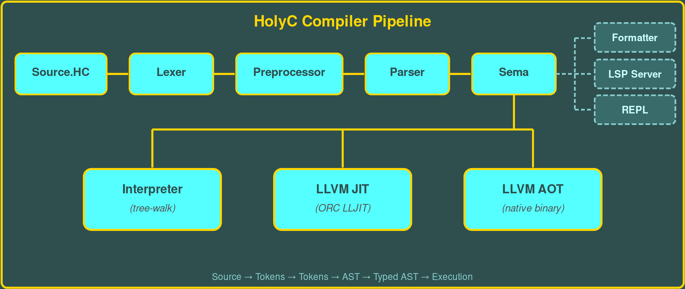

Features
Execution Modes
- Tree-walk Interpreter for rapid development
- LLVM JIT via ORC LLJIT with SHA-256 caching
- LLVM AOT native binary compilation
Type System
- Void (
U0), unsigned integers (U8,U16,U32,U64), signed integers (I8,I16,I32,I64) - Floating point (
F32,F64),Bool - Pointers (multi-level), arrays (multi-dimensional), classes with inheritance
- Enums, unions, typedefs, C-style function pointers
HolyC Extensions
- Power operator
`(backtick) - Postfix type casting:
expr(I64) ^^logical XOR- String output syntax:
"Hello %s\n", name; case N..M:range syntax in switch#exe { }compile-time execution blocks- Default argument values
Standard Library (stdlib/)
- vector.HC, hashmap.HC, queue.HC, stack.HC
- tree.HC, list.HC, set.HC
- sort.HC (QuickSort), regex.HC
- math.HC, strings.HC
100+ Runtime Builtins
- Memory: MAlloc, CAlloc, Free, ReAlloc, MemCpy, MemSet, MemMove
- Strings: StrLen, StrCmp, StrCpy, StrCat, StrFind, StrNew, StrDup, WildMatch
- Math: Abs, Min, Max, Sqrt, Sin, Cos, Tan, Log, Exp, Pow, Floor, Ceil
- I/O: Print, GetChar, GetStr, FileOpen, FileRead, FileWrite
- Bit ops: Bt, Bts, Btr, Btc, Bsf, Bsr, BCnt
Tooling
- Code formatter (TempleOS style)
- LSP server for IDE integration
- GDB pretty-printers
- Interactive REPL with
:reset,:memory,:time,:import
Preprocessor
#define,#if,#include- Variadic macros, token paste (
##), stringification (#) #execompile-time execution blocks
Other
- Exception handling (try/catch/throw)
- Inline assembly with GCC extended constraints
- Cross-compilation (aarch64, x86_64-mingw)
extern "C"interop with system libraries- Static local variables,
regkeyword
Architecture

The HolyC compiler pipeline flows from source text through lexing, preprocessing, and parsing into an AST. Semantic analysis resolves types and validates the program. From there, three execution backends are available: a tree-walk interpreter for immediate execution, an LLVM JIT compiler for optimized runtime performance with SHA-256 bitcode caching, and an LLVM AOT compiler that emits native binaries. The formatter and LSP server operate directly on the AST for code formatting and IDE integration.
Quick Start
Build
# Dependencies: CMake 3.20+, LLVM 14-18, C++17 compiler
git clone https://github.com/pacakutekagudabasa/HolyC.git
cd HolyC
mkdir build && cd build
cmake ..
make -j$(nproc)Run Modes
# Interpreter
./hcc --interpret hello.HC
# JIT compile & run
./hcc --jit hello.HC
# AOT compile to native binary
./hcc -o hello hello.HC
./hello
# Interactive REPL
./hcc --repl
# Format code
./hcc --format code.HC
# LSP server
./hcc --lspExample Program (hello.HC)
// HolyC Hello World
U0 Main()
{
I64 i;
for (i = 0; i < 10; i++)
"Hello World %d\n", i;
}
Main;